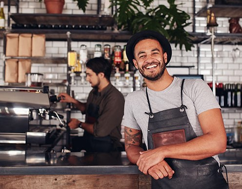

Taking Food Orders - Taking the meal order correctly may be the most important part of service. Teach servers to write down seat numbers and the entire order. Drill them to write down temperatures of meat, which salad dressing, and what should be served on the side. Efficiency is key.
.
Good Customer Service During the Meal - After the plates are delivered, the servers are still working. Don’t let your wait staff disappear while their tables are eating. Servers should visit the table shortly after delivering food to ask “How is everything?” It will either be fine or a customer will request something; for example, extra cheese. If there is a real problem, this is the server’s opportunity to communicate with the kitchen and potentially fix it.
Water glasses should not be allowed to sit empty. Servers can walk by tables with a water pitcher and offer to refill half-full glasses.
